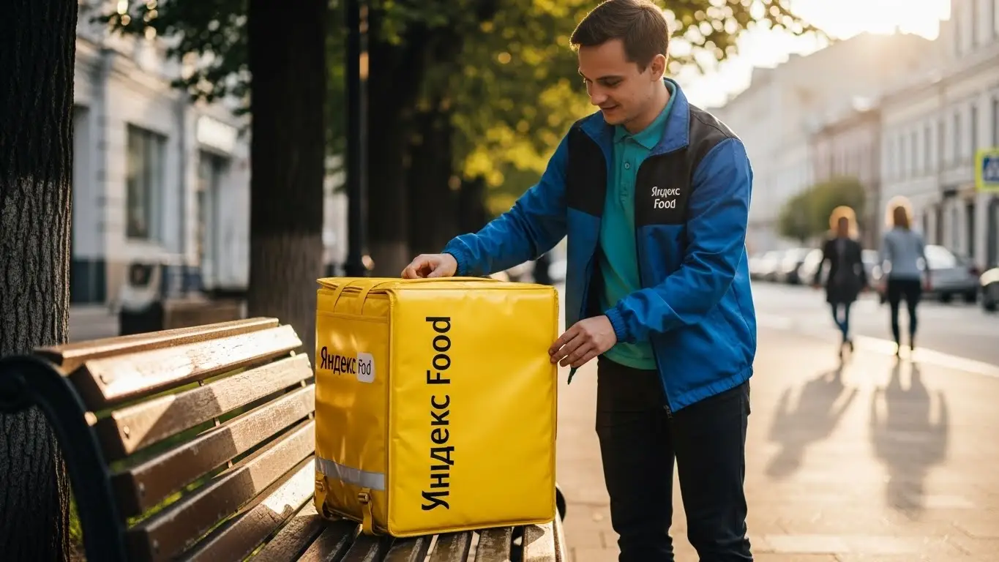
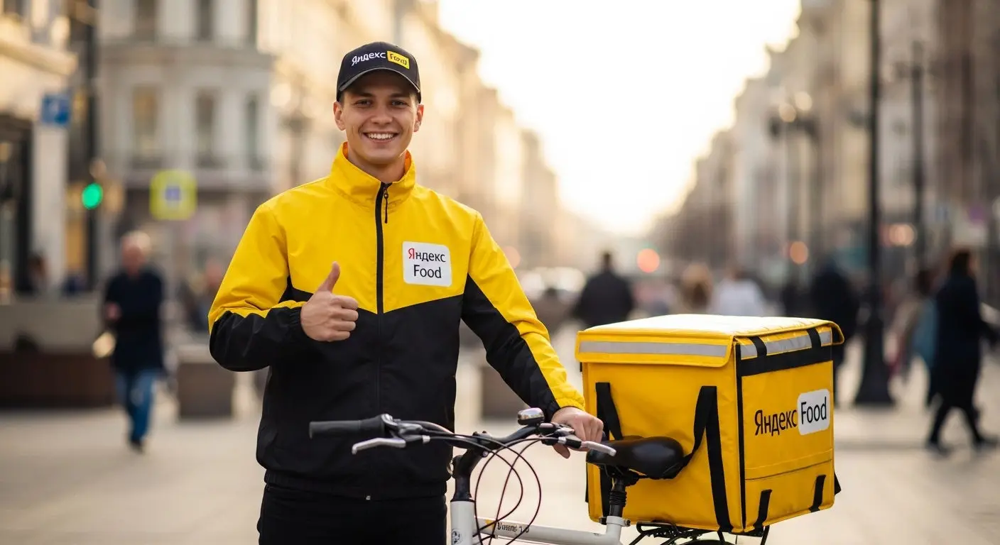
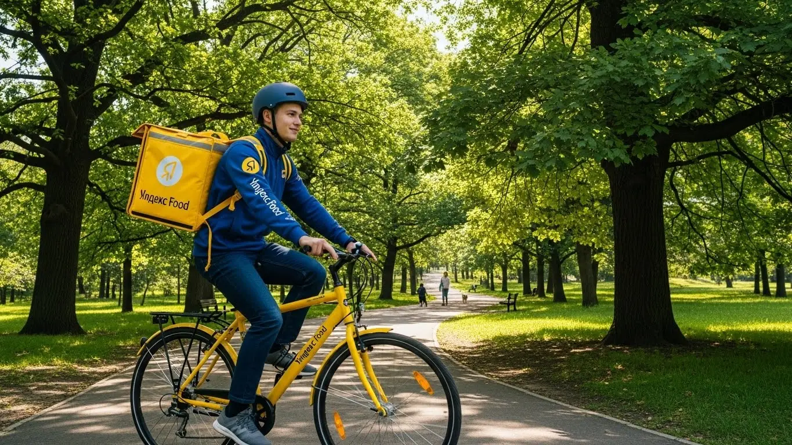
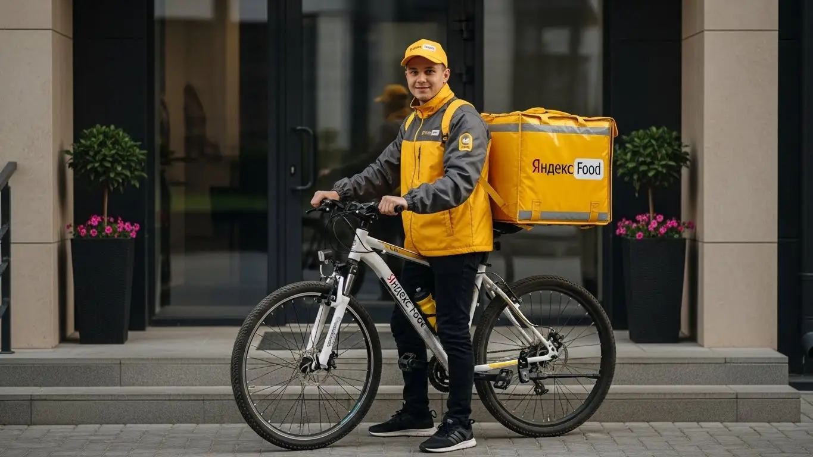

Работа курьером Яндекс Еда в Новосибирске: доход 2025-2026

- Работа курьером Яндекс Еды в Новосибирске: для кого эта вакансия и что вы получите
- Сколько вы будете зарабатывать курьером в Новосибирске: калькулятор дохода и разбор выплат
- Реальный заработок курьера в Новосибирске: смены и месячный доход
- График работы и форматы занятости
- Требования к кандидату и документы
- Самозанятость, налоги и юридическая чистота
- Пошаговое оформление и первый выход на линию в Новосибирске
- Пешком, на вело или на авто: что выгоднее в Новосибирске
- Районы, маршруты и «топовые» зоны заказов в Новосибирске
- Безопасность, страховка, штрафы и оплата простоя
- Плюсы и возможные минусы работы курьером в Новосибирске
- Реальные истории и отзывы курьеров из Новосибирска
- Ответы на главные вопросы о работе курьером Яндекс Еды в Новосибирске
- Короткие ответы на главные вопросы
- Подведём итоги: твой следующий шаг в Новосибирске
Все города
Думаешь, работа курьером в Новосибирске — это просто крутить педали или руль и получать легкие деньги? Эта мысль быстро улетучивается, когда ты в минус тридцать встаешь в мертвой пробке на Октябрьском мосту, а клиент уже обрывает телефон. Боишься, что убьешь машину по нашим дорогам, а заработаешь копейки из-за штрафов и низких коэффициентов? Я сам прошел через все это в Яндекс Еде и Лавке и расскажу, как обстоят дела на самом деле, здесь, в нашем городе, а не в рекламных буклетах.
Поверь, 90% новичков сливаются в первый же месяц именно в Новосибирске. И не потому, что работа плохая, а потому что никто не считает заранее реальные расходы на бензин или ремонт вела, не вникает в систему приоритета, которая решает, получишь ты жирный заказ из центра или поедешь за три копейки на окраину Плющихинского жилмассива. В итоге — разочарование, пустой кошелек и ощущение, что тебя обманули. Чтобы заранее оценить все условия, изучить подробный калькулятор и при желании подать заявку, посмотри актуальную информацию про работу курьером Яндекс Еда в Новосибирске.
В этом гиде мы честно разберем, какой транспорт выбрать для Новосибирска, чтобы не уйти в минус. Посчитаем, сколько чистыми остается в кармане после всех вычетов и налогов. Я покажу на карте самые «хлебные» районы и время, когда заказов реально много. Расскажу, как сибирская погода превращается из врага в союзника с повышенными тарифами, и как не нарваться на штрафы, которые съедят всю дневную выручку.
Меня зовут Алексей. Я начинал обычным велокурьером, а сейчас у меня свой небольшой таксопарк-партнер. Я знаю эту кухню изнутри: от сломанных домофонов в спальниках на Левом берегу до хитрых заказов из ресторанов на Красном проспекте. Так что забудь про рекламу. Сейчас я разложу тебе по полочкам всю правду про работу курьером Яндекс Еда в Новосибирске. Без прикрас, как есть. Начнём с главного.
Но прежде чем нырять в детали, давай быстро пробежимся по ключевым моментам. Этот короткий гид поможет сориентироваться в статье.
Что ты точно узнаешь из этого разбора
В этой статье ты ТОЧНО узнаешь:
- Сколько чистыми можно заработать в Новосибирске за смену и какой транспорт для этого выгоднее: авто, велосипед или свои двои?
- В каких районах и в какое время больше всего заказов, чтобы не кататься впустую?
- Как устроена система штрафов и что покрывает бесплатная страховка на смене?
- Насколько сложно оформить самозанятость и сколько реально придётся платить налогов с дохода?
- Что такое оплата простоя и как она защищает доход, если заказов вдруг стало мало?
А если тебе некогда читать всю статью — переходи сразу к заключению, где ты найдёшь короткие ответы на все эти вопросы и указания, в каких разделах искать подробности.
А чтобы сразу увидеть общую картину, вот наглядная инфографика.
Работа курьером в Новосибирске: ключевые цифры
Работа курьером Яндекс Еды в Новосибирске: для кого эта вакансия и что вы получите
Кому подойдёт эта работа в Новосибирске
Давай начистоту: работа курьером — это не для всех, но для многих это отличный вариант. В Новосибирске эта вакансия идеально подходит студентам, которым нужна подработка после пар. Ты сам решаешь, когда выходить на линию, и можешь спокойно совмещать с учёбой в НГТУ или СибГУТИ. Также это хороший старт для тех, кто ищет работу без опыта: здесь не требуют резюме и рекомендаций, главное — твоё желание и ответственность.
Эта занятость — спасение для тех, кому деньги нужны «ещё вчера». Сервис предлагает ежедневные выплаты, так что не нужно ждать конца месяца. Если у тебя есть основная работа, но хочется подзаработать на выходных или по вечерам, — пожалуйста. Водители, которые устали от такси, тоже находят здесь своё: заказы от Яндекс Еды и Доставки есть всегда, а общаться с пассажирами не нужно. По сути, это отличный вариант для любого, кто ценит свободный график и быстрый, честный заработок.
Главные преимущества для жителей районов Заельцовского, Ленинского, Октябрьского
Одно из главных удобств — возможность работать прямо у себя в районе. Тебе не придётся каждое утро ехать через весь Новосибирск по пробкам на Красном проспекте или Димитровском мосту. Живёшь, например, в Заельцовском районе — можешь брать заказы в окрестностях площади Калинина и доставлять их по своей же территории. То же самое касается жителей Ленинского или Октябрьского районов: всегда есть заказы из местных кафе, ресторанов и магазинов.
Приложение «Яндекс Про» позволяет выбирать конкретные зоны для работы, а значит, можно начать смену, просто выйдя из своего подъезда. Это экономит не только время, но и деньги на проезд. Ты лучше знаешь свои улицы, дворы и короткие пути, что даёт преимущество в скорости. В итоге ты выполняешь больше заказов за то же время и, соответственно, больше зарабатываешь, работая на знакомой территории.
Что по деньгам и условиям
Если говорить о деньгах, то в Новосибирске активный курьер за полную 8-часовую смену может заработать в среднем 3000–4500 рублей. Конечно, итоговый доход зависит от твоего транспорта, района и количества заказов. В месяц при полной занятости вполне реально выходить на зарплату в 70 000–90 000 рублей и даже больше, особенно если ты курьер на автомобиле и берёшь дальние заказы. Если же это подработка на 3–4 часа в день, то можно рассчитывать на 25 000–40 000 рублей в месяц.
Самое важное — условия работы максимально прозрачные. Ты работаешь, когда хочешь, — хоть два часа в день, хоть двенадцать. Деньги за выполненные заказы приходят на карту каждый день. Главное требование — начать можно без опыта, а оформление обычно происходит в статусе самозанятого. Пройдёшь короткое онлайн-обучение, получишь термосумку или термокороб и можешь выходить на линию. Никаких сложных собеседований и долгого ожидания.
Сколько вы будете зарабатывать курьером в Новосибирске: калькулятор дохода и разбор выплат
Из чего складывается доход курьера
Твой заработок — это не просто фиксированная ставка, а сумма нескольких составляющих. Во-первых, это базовая оплата за каждый выполненный заказ. Во-вторых, к ней добавляется доплата за расстояние — чем дальше везти, тем больше платят. В плохую погоду, вечером или в выходные, когда спрос высокий, включаются повышающие коэффициенты. Карта в приложении «Яндекс Про» окрашивается в яркие цвета, и в таких зонах можно заработать за заказ в 1,5–2 раза больше обычного.
Кроме того, есть бонусы за выполнение определённого количества заказов в день или неделю, а все чаевые от клиентов полностью твои. Важный момент, который многие упускают, — это оплата простоя. Если ты приехал в ресторан, а заказ ещё не готов, сервис начисляет деньги за ожидание. Для пеших курьеров и велокурьеров на длинных заказах может быть компенсация проезда на общественном транспорте. Вся эта система делает доход предсказуемым и защищает тебя от пустых трат времени.
Как пользоваться калькулятором дохода
Чтобы прикинуть свой будущий заработок, на сайте есть специальный калькулятор. Пользоваться им просто. Сначала выбираешь свой город — Новосибирск. Затем указываешь тип доставки: пеший курьер, велокурьер или курьер на своём авто. После этого выставляешь, сколько часов в день и сколько дней в неделю планируешь работать.
Нажимаешь кнопку «Рассчитать», и система показывает примерный диапазон твоего дохода за день и за месяц. Эти цифры, конечно, ориентировочные, но они основаны на реальной статистике по городу и помогают понять, на что можно рассчитывать. Это удобный инструмент, чтобы оценить, подходит ли тебе такая подработка или полная занятость с финансовой точки зрения.
Прикинь свой возможный доход в Новосибирске
8 часов
5 дней
Это ориентировочный расчёт. Реальный доход в Новосибирске зависит от транспорта, района, погоды, бонусов и чаевых.
Чтобы увидеть более точные цифры и сразу подать заявку, загляни на страницу про работу курьером Яндекс Еда в твоём городе — там есть актуальные условия, подробный FAQ и анкета.
Примеры расчёта для пешего, вело- и авто‑курьера в Новосибирске
Давай на конкретных примерах. Пеший курьер, работающий в центре Новосибирска, в районе площади Ленина, за 4-часовую смену в будний день может заработать 1500–1800 рублей. В этой зоне много заказов, расстояния небольшие, а рядом полно офисов и кафе.
Велокурьер, который доставляет заказы между спальными районами, например, Ленинским и Кировским, за 6-часовую смену может заработать 2500–3000 рублей. Он быстрее пешего, не зависит от пробок на мостах и может брать заказы на более длинные дистанции.
Курьер на автомобиле — это уже другой уровень. Работая полный день (8–10 часов), он может покрывать весь город, включая дальние заказы в Академгородок или Пашино. В обычный день его заработок составит 4000–5000 рублей. А если попадётся снежный день, когда коэффициенты взлетают до небес, за смену можно привезти домой и 7000–8000 рублей. Своё авто даёт возможность брать больше заказов и работать в любую погоду с комфортом.
Реальный заработок курьера в Новосибирске: смены и месячный доход
Теперь к самому главному, без рекламных обещаний. Вопрос «сколько реально можно заработать курьером в Яндексе» — ключевой, и на него нет одного ответа. Твоя зарплата в Новосибирске — это не оклад, а результат твоих действий. Доход зависит от того, как ты двигаешься (пешком, на велике или на авто), когда выходишь на линию и в каком районе работаешь. Это конструктор, который ты собираешь сам.
Кто-то выходит на пару часов после основной работы и увозит домой 1000–1500 рублей, а кто-то катается полный день и делает по 5–6 тысяч. Главное понять: здесь платят не за время, а за результат. Если сидеть на лавочке в тихом дворе, выплат не будет. А если поймать волну заказов в непогоду в центре — можно за несколько часов сделать дневную норму офисного работника.
Диапазон дохода для подработки и полной занятости
Чтобы у тебя были конкретные ориентиры по Новосибирску, разложу по полочкам. Цифры даю чистыми, уже после комиссии сервиса, но без учёта твоих расходов (проезд, бензин, еда) и налога для самозанятых.
Если это подработка (2–4 часа в день):
- Пеший курьер: В среднем 800–1500 рублей за выход. Идеально для центра, где много коротких заказов из Яндекс Еды в шаговой доступности.
- Велокурьер: 1000–2000 рублей. Велосипед даёт скорость, ты успеваешь делать больше заказов на средние дистанции в спальных районах вроде Заельцовского или Ленинского.
- Курьер на автомобиле: 1500–3000 рублей. На машине ты забираешь самые дорогие и дальние заказы, но не забывай вычитать расходы на топливо.
Если это полная занятость (8–10 часов в день):
- Пеший курьер: 2000–3500 рублей в день. В месяц выходит около 45–70 тысяч рублей, если работать 5/2.
- Велокурьер: 2500–4500 рублей в день. Это уже 55–90 тысяч в месяц. Физически тяжело, но заработок хороший.
- Курьер на своем авто: 4000–7000 рублей в день. Самый высокий потенциальный доход, в месяц может доходить до 80–140 тысяч рублей. Но и расходы самые большие: бензин, амортизация. Зато в новосибирские морозы или снегопады ты будешь королём.
Как район, время суток и погода влияют на доход
Запомни три кита высокого заработка: место, время и погода. Если научишься их сочетать, всегда будешь с деньгами. Система платит больше там, где спрос превышает предложение, то есть заказов много, а курьеров мало. Это отмечается на карте в приложении «Яндекс Про» повышенными коэффициентами.
В Новосибирске самые «жирные» зоны — это, конечно, Центральный район (особенно в районе Красного проспекта и площади Ленина), линия метро, крупные ТРЦ вроде «Ауры» и «Галереи». Там всегда есть заказы из ресторанов и магазинов. В обед (12:00–14:00) и вечером (18:00–21:00) спрос взлетает. Пятница и выходные — это вообще твой звёздный час.
Погода — это главный друг курьера. Как только пошёл сильный дождь, снегопад или ударил мороз под -30°C, большинство исполнителей прячутся по домам. Коэффициенты взлетают до небес, а клиенты становятся щедрее на чаевые. В такую погоду за 3–4 часа можно заработать как за целый обычный день.
Советы по увеличению заработка от опытных курьеров
Чтобы не просто кататься, а именно зарабатывать, нужно подходить к делу с головой. Вот несколько проверенных советов от опытных сотрудников. Во-первых, не гоняйся за «фиолетовыми зонами» через весь город. Пока доедешь, спрос может упасть. Лучше досконально изучи 1–2 района, например, свой и соседний. Знай все короткие пути, где можно срезать, где находятся популярные рестораны.
Во-вторых, активно используй плановые слоты в Яндекс Про. Они дают гарантию минимального дохода, даже если заказов будет мало. Но главное — бери слоты в пиковое время: вечерние будни, обеды и полные дни в выходные. В-третьих, будь гибким. Если есть возможность, сочетай форматы. Например, в хорошую погоду работай на велосипеде в своём районе, а как только начался снегопад — пересаживайся на машину и езжай в центр ловить дорогие заказы.
Вот реальный пример: Мой знакомый парень, курьер на автомобиле, обычно делает в день 4000-4500 рублей. В один из ноябрьских дней, когда Новосибирск накрыл ледяной дождь и город встал в пробках, он не остался дома. Взял вечерний слот с 18:00 до 23:00 и работал в Октябрьском районе. Коэффициенты были х2, х3. За 5 часов он выполнил 14 заказов и заработал 4200 рублей, плюс почти 700 рублей ему накидали чаевыми. Он сделал дневную норму за вечер, потому что работал тогда, когда другие не хотели.
В итоге, твой заработок в Яндекс Доставке — это не лотерея. Он напрямую зависит от твоего умения анализировать спрос, планировать смены и не бояться трудностей. Работай головой, а не только ногами, и доход будет стабильно высоким.
График работы и форматы занятости
Одно из главных преимуществ работы курьером в Яндексе — гибкость. Ты сам себе начальник и сам решаешь, когда и сколько работать. Нет обязательных смен, планов продаж и начальника, который стоит над душой. Можно начать без опыта, совмещая доставки с другими делами.
Хочешь — выходишь на линию на пару часов, чтобы заработать на кофе и кино. Хочешь — работаешь полный день и обеспечиваешь семью. Эта свобода идеально подходит для разных жизненных ситуаций.
Приложение «Яндекс Про» — твой рабочий кабинет. Через него ты выбираешь время и район для работы, видишь зоны повышенного спроса и отслеживаешь свой доход. Кстати, доступны ежедневные выплаты на карту. Можно заранее забронировать плановый слот на несколько часов, а можно просто нажать кнопку «На линию» и начать выполнять заказы в любой момент. Это позволяет совмещать доставку с учёбой, основной работой или любыми другими делами.

Подработка после учёбы или основной работы
Совмещать доставку с чем-то ещё — самый популярный сценарий. Такая подработка — отличный способ получить дополнительный доход, не меняя кардинально свою жизнь. Вот пара реальных примеров из Новосибирска.
Пример 1: Студент НГТУ. Парень живёт в общежитии у метро «Студенческая». После пар, примерно с 18:00 до 22:00, он садится на велосипед и доставляет заказы Яндекс Еды в своём Ленинском районе. Заказов вечером много: люди возвращаются с работы и заказывают ужин. В пятницу и субботу он может отработать и более длинную смену, часов 6–8. В итоге у него набегает 25–30 тысяч рублей в месяц. Для студента это отличные деньги, которые он зарабатывает в удобное для себя время.
Пример 2: Офисный сотрудник. Мужчина работает в офисе 5/2 до 18:00. У него есть машина. Несколько раз в неделю, особенно в плохую погоду, он по пути домой включает «Яндекс Про» и выполняет 2–3 заказа Яндекс Доставки по высокому коэффициенту. В субботу он может целенаправленно выйти на линию на 4–5 часов. Такой формат приносит ему дополнительные 15–20 тысяч в месяц, которые он тратит на обслуживание машины или отдых. Он не привязан к графику и работает только тогда, когда есть желание и выгодные условия.
Полная занятость: как выглядит типичный день курьера
Если рассматривать доставку как основную работу, то день строится вокруг пиков спроса. Типичный день курьера на полной занятости в Новосибирске выглядит примерно так. Он не встаёт в 6 утра, а выходит на линию около 10:00–11:00. Утром заказов меньше, можно спокойно развозить посылки из Яндекс Маркета или документы.
К 12:00 он смещается в район с бизнес-центрами, например, в Железнодорожный или Центральный, чтобы ловить волну обеденных заказов из кафе. Этот пик длится до 14:30–15:00. После этого наступает затишье. В это время можно пообедать самому, отдохнуть или выполнить несколько несрочных доставок. Главный заработок начинается вечером. С 18:00 до 22:00 — самый плотный поток заказов на ужины из ресторанов и продукты из магазинов. Опытный курьер к этому времени уже находится в густонаселённом спальном районе или в центре, готовый к работе. Отработав вечерний пик, около 22:30–23:00 он заканчивает смену.
Как планировать слоты и выходы через приложение «Яндекс Про»
«Яндекс Про» — твой главный инструмент. В приложении есть два основных режима: свободные выходы и плановые слоты. Свободный выход — это когда ты просто нажимаешь кнопку и начинаешь работать в любое время и в любом месте. Плановый слот — это когда ты заранее бронируешь время и конкретный район для работы. Например, с 18:00 до 22:00 в Центральном районе.
Плановые слоты хороши тем, что дают гарантию минимального дохода за час, даже если заказов будет мало. Но есть важное правило: на слот нельзя опаздывать. Нужно быть в указанной зоне к началу смены. За опоздания и раннее завершение слота снижается рейтинг Активности. А чем выше твой рейтинг, тем больше у тебя приоритет при распределении заказов. Поэтому дисциплина здесь напрямую влияет на деньги. Всегда смотри на карту спроса в приложении: она подсвечивает зоны, где сейчас больше всего заказов и действуют повышенные коэффициенты.
Поучительная история: Новичок в первый же день взял плановый слот на 8 часов в Заельцовском районе. Он опоздал на 20 минут, потому что попал в пробку на Большевистской. В итоге его рейтинг немного упал, и первые полтора часа заказы приходили редко. Он уже начал думать, что работа плохая. Но пообщавшись с опытными ребятами, понял свою ошибку. На следующий день он выехал заранее, прибыл в зону за 10 минут до начала слота, и заказы посыпались один за другим.
В конечном счёте, свободный график — это не анархия. Чтобы он приносил хороший доход, нужна самодисциплина и умение пользоваться инструментами, которые даёт сервис. Планируй своё время, следи за рейтингом и анализируй карту спроса — тогда сможешь зарабатывать стабильно и много.
Требования к кандидату и документы
Многих новичков пугают строгие требования и возможная бумажная волокита, но на деле условия работы курьером в Яндекс Еде гораздо проще. Чтобы начать, не нужен диплом или многолетний опыт работы. Главное — твоё желание зарабатывать и базовая ответственность. Давай по порядку разберём, что от тебя потребуется.
Возраст, гражданство и базовые условия
Начнём с основ. Первое и самое жёсткое требование — возраст. Работать курьером в Яндекс Еде можно строго с 18 лет. Сервис не делает исключений, даже при наличии согласия родителей. Это связано с материальной ответственностью и особенностями оформления.
Второе — гражданство. Устроиться на работу могут граждане Российской Федерации и стран Евразийского экономического союза (ЕАЭС): Армении, Беларуси, Казахстана и Кыргызстана. Если у тебя паспорт одной из этих стран, проблем не возникнет. Для граждан других государств потребуется пакет документов, разрешающих трудовую деятельность в РФ.
И последнее — базовые условия. От тебя не требуют олимпийской подготовки, но ты должен быть готов активно передвигаться по городу в течение смены, особенно если выбираешь пеший формат или велосипед. Для работы обязательно нужен смартфон на Android, так как рабочее приложение «Яндекс Про» создано именно для этой операционной системы. Ну и само собой, аккуратность и вежливость — ты лицо сервиса для клиента.

Какие документы нужны для работы курьером
Список документов для оформления минимален, и собрать его можно за один день. Тебе не придётся бегать по инстанциям и стоять в очередях. Вот что нужно подготовить:
- Паспорт. Основной документ, удостоверяющий личность. Он нужен для заключения договора с сервисом.
- ИНН (Идентификационный номер налогоплательщика). Необходим для регистрации в качестве самозанятого и последующей уплаты налогов. Если ты не помнишь свой номер, его можно за пару минут бесплатно проверить на сайте Федеральной налоговой службы (ФНС) по паспортным данным.
- Личная банковская карта. Подойдёт карта любого российского банка (МИР, Visa, MasterCard), оформленная на твоё имя. Именно на неё будут поступать все выплаты.
- Медицинская книжка. Здесь условия могут отличаться. Для доставки запечатанных заказов из ресторанов она чаще всего не требуется. Но если ты планируешь работать с продуктами из магазинов или дарксторов (например, со складов «Яндекс Лавки»), медкнижка может понадобиться. Актуальные требования лучше уточнить на этапе регистрации, но её наличие в любом случае будет плюсом.
Как видишь, ничего сверхъестественного. Большинство этих документов и так всегда под рукой.
Можно ли работать с 16 лет и какие есть альтернативы
Отвечу прямо: устроиться в Яндекс Еду курьером с 16 или 17 лет нельзя. Политика компании однозначна — трудоустройство возможно только с 18 лет. Это связано с полной материальной ответственностью за дорогие заказы и оборудование (термокороб), а также с необходимостью оформлять статус самозанятого, который полноценно доступен лишь совершеннолетним.
Если тебе ещё нет 18, а заработать хочется, не отчаивайся. В Новосибирске есть другие варианты подработки для подростков. Можно рассмотреть вакансии промоутера — раздавать листовки у метро «Площадь Ленина» или в крупных ТРЦ вроде «Ауры» и «Галереи Новосибирск». Также часто ищут помощников в небольшие магазины или кофейни на неполный день. Это, конечно, не такая свободная работа, как доставка, но тоже хорошая возможность получить первый опыт и карманные деньги.
Вот как это бывает: Ко мне как-то пришёл устраиваться парень, 19-летний студент НГТУ. Он был уверен, что оформление займёт неделю, что нужна куча справок, и особенно его пугала медкнижка. На деле же весь процесс занял меньше дня. Он заполнил анкету, подтвердил личность через «Яндекс Про», а его ИНН мы нашли на сайте налоговой за три минуты. Медкнижка для старта не понадобилась. Уже на следующий день он вышел на свой первый слот в районе метро «Студенческая» и заработал первые 1200 рублей за 4 часа. Его удивление от простоты процесса — лучшее доказательство, что страхи часто преувеличены.
Краткий вывод: Основные условия для работы курьером — возраст от 18 лет, гражданство РФ или ЕАЭС и наличие смартфона на Android. Пакет документов минимален: паспорт, ИНН и банковская карта. Советую заранее проверить свой ИНН на сайте ФНС, чтобы не тратить время при регистрации.
Самозанятость, налоги и юридическая чистота
Многих пугает слово «самозанятость», кажется, что это что-то сложное, связанное с налогами и отчётами. На самом деле, это самый простой и прозрачный способ сотрудничать с сервисом и получать официальный доход. Яндекс выбрал такое оформление не чтобы усложнить тебе жизнь, а наоборот — чтобы сделать работу максимально удобной и законной.
Почему курьеры Яндекс Еды работают как самозанятые
Статус самозанятого (или, официально, плательщика налога на профессиональный доход — НПД) — это специальный налоговый режим, созданный для тех, кто работает на себя. Для курьера это идеальный вариант по нескольким причинам.
Во-первых, это официальный доход. Все выплаты от Яндекса — «белые». Это значит, что ты можешь, например, взять кредит в банке или получить визу, подтвердив свой заработок. Во-вторых, никакой сложной бухгалтерии. Не нужно вести книги учёта, сдавать декларации или нанимать бухгалтера — всё происходит автоматически. В-третьих, это юридическая чистота. Ты работаешь по договору-оферте как независимый партнёр, а не как наёмный сотрудник. Это даёт свободу выбирать график и не быть привязанным к строгому расписанию. Работать неофициально, получая деньги на карту «в серую», — это всегда риск блокировок и вопросов со стороны налоговой.
Как за 10 минут оформить самозанятость через «Мой налог»
Процесс регистрации действительно прост и занимает не больше 10 минут, причём выходить из дома не придётся. Оформление проходит через официальное приложение ФНС.
- Скачай приложение. Зайди в Google Play, найди приложение «Мой налог» и установи его на свой смартфон.
- Выбери способ регистрации. Самый быстрый — по паспорту РФ.
- Отсканируй паспорт. Наведи камеру телефона на главный разворот паспорта, и приложение само распознает все данные.
- Сделай селфи. Приложение попросит сфотографировать себя для подтверждения личности. Это быстрая проверка, что регистрируешься именно ты.
- Подтверди регистрацию. После отправки данных система ФНС проверит информацию, что обычно занимает не более 5–10 минут.
Вот и всё. Ты официально становишься плательщиком налога на профессиональный доход (НПД). Останется только зайти в приложение «Яндекс Про», открыть раздел «Профиль» и привязать свой статус самозанятого, предоставив приложению доступ.
Сколько и как платить налоги
Здесь тоже всё максимально прозрачно и просто. Ставка налога для самозанятого курьера, работающего с юридическими лицами (а Яндекс — это юрлицо), составляет 6% от дохода. Никаких других скрытых сборов или отчислений нет.
Процесс уплаты налога полностью автоматизирован. Когда Яндекс перечисляет тебе выплаты за выполненные заказы, «Яндекс Про» автоматически передаёт данные о сумме дохода в приложение «Мой налог» и формирует чек. Тебе самому ничего считать и вбивать не нужно. Раз в месяц, до 12-го числа, ФНС присылает в «Мой налог» квитанцию с итоговой суммой за предыдущий месяц. Оплатить её нужно до 28-го числа, что можно сделать прямо в приложении с привязанной банковской карты.
Кроме того, всем новым самозанятым государство даёт приветственный бонус — 10 000 рублей. Эти деньги нельзя снять, но они автоматически идут на уменьшение налога. Пока бонус не исчерпается, ты будешь платить не 6%, а меньше. Это гораздо проще и безопаснее, чем подработка «в серую» с постоянным риском блокировки карты за подозрительные переводы.
История из жизни: У меня в таксопарке работает водителем-курьером мужчина, ему под 50. Он всю жизнь работал по «серым» схемам и был уверен, что налоги — это грабёж. Когда я ему объяснил про самозанятость, он долго отнекивался. В итоге я помог ему с регистрацией. Он отработал первую неделю, развозя заказы по всему правому берегу Новосибирска, от центра до Родников, и заработал около 20 тысяч. Когда в следующем месяце ему пришёл налог чуть больше тысячи рублей, который он оплатил одной кнопкой в телефоне, он был в шоке. Сказал, что если бы знал, что всё так просто и честно, давно бы перешёл на такой формат.
Краткий вывод: Самозанятость — это не страшно, а удобно и законно. Оформление статуса НПД занимает 10 минут, налог составляет всего 6% и рассчитывается автоматически. Это даёт тебе официальный доход и избавляет от рисков работы «в тени». Не бойся этого шага, он открывает дорогу к стабильному и честному заработку.
Пошаговое оформление и первый выход на линию в Новосибирске
Шаг 1–2: анкета и онлайн‑обучение
Многие думают, что устроиться курьером — это долго и муторно, с кучей бумажек и собеседований. На деле всё гораздо проще и происходит онлайн, что идеально для подработки. Сначала ты заполняешь короткую анкету на сайте: ФИО, телефон, гражданство. Никаких вопросов про твой предыдущий опыт или образование там нет — начать можно без опыта. Главное — чтобы тебе было 18 лет и были в порядке базовые документы.
После анкеты система проверит твои данные, это обычно занимает от 15 минут до пары часов. Затем на телефон придёт ссылка на короткое онлайн-обучение. Это не нудные лекции, а несколько простых видеороликов и инструкций. Тебе покажут, как пользоваться приложением «Яндекс Про», правильно общаться с клиентами и ресторанами, что делать в нестандартных ситуациях. В конце будет небольшой тест, чтобы убедиться, что ты всё понял. Весь процесс занимает меньше часа, и его можно пройти, не вставая с дивана.
Шаг 3: получение сумки и доступа к заказам в Новосибирске
Как только ты прошёл обучение и тест, следующий шаг — получить главный рабочий инструмент, термосумку или термокороб. Без него система просто не даст доступ к заказам из ресторанов и магазинов. В Новосибирске есть несколько способов его получить. Чаще всего нужно приехать в один из партнёрских центров для курьеров. Точные адреса всегда можно посмотреть прямо в приложении «Яндекс Про», оно покажет ближайшие к тебе точки.
В центре ты показываешь, что прошёл обучение, и подписываешь договор с партнёром сервиса. Стандартный формат работы — как самозанятый, это легко оформить онлайн. После этого забираешь свою жёлтую или чёрную сумку. Иногда её могут даже доставить на дом. Как только номер твоего термокороба зарегистрируют в системе, в приложении «Яндекс Про» открывается полный функционал: карта города с зонами повышенного спроса, выбор слотов и, конечно, сами заказы. С этого момента ты — полноценный курьер, готовый к работе.
Шаг 4: первый слот и первый доход
Теперь самое интересное — первый выход на линию. Заходишь в «Яндекс Про», открываешь расписание и выбираешь свой первый слот. Слот — это отрезок времени, в который ты планируешь доставлять заказы, например, с 18:00 до 22:00. Это и есть тот самый свободный график. Для начала советую выбрать знакомый тебе район Новосибирска, где ты хорошо ориентируешься. Так будет спокойнее, не придётся плутать по незнакомым дворам.
Выбрав слот и район, нажимаешь кнопку «На линию» и ждёшь первый заказ. Приложение само найдёт ближайший, покажет маршрут до ресторана и потом до клиента. Просто следуй инструкциям на экране. Деньги за доставку и возможные чаевые появятся на балансе в приложении сразу после выполнения. Большой плюс — ежедневные выплаты: заработанное можно выводить на карту хоть каждый день. По сути, от заполнения анкеты до первого реального дохода может пройти меньше суток.
Как это работает на практике: Парень из моего таксопарка, студент НГТУ, решил подработать курьером. В понедельник утром заполнил анкету, пока ехал в универ. Днём между парами прошёл обучение. Вечером заехал в курьерский центр на левом берегу, забрал сумку. В тот же вечер вышел на двухчасовой слот в своём Ленинском районе. Спокойно сделал 4 заказа из окрестных кафешек и заработал первые 650 рублей. Говорит, не ожидал, что всё будет так быстро.
В итоге, весь процесс от заявки до первого заработка максимально упрощён и занимает один, максимум два дня. Главное — иметь под рукой паспорт и ИНН для оформления самозанятости, а остальное делается через смартфон. Мой совет: не откладывай, если решил попробовать. Чем быстрее пройдёшь эти шаги, тем быстрее начнут поступать реальные деньги.
Пешком, на вело или на авто: что выгоднее в Новосибирске
Пеший курьер: для центра и плотной застройки в Новосибирске
Если ты живёшь недалеко от центра или готов добираться до него, пеший формат — отличный старт. В центре Новосибирска, особенно в районе площади Ленина, Красного проспекта и улиц вокруг ТРЦ «Аура» и «Галерея Новосибирск», заказов всегда много. Здесь куча офисов, кафе, ресторанов, и расстояния между ними небольшие, часто в пределах 1-2 километров. Пока водители стоят в пробках на Вокзальной магистрали или улице Ипподромской, ты спокойно срезаешь путь через дворы и скверы.
Пешему курьеру не нужны расходы на бензин или проезд, а вся работа превращается в полезную прогулку. Заказы в центре часто идут цепочкой: отдал один — и тут же в 300 метрах от тебя уже ждёт следующий. Это самый простой способ начать, не требующий никаких вложений, кроме твоих ног и времени. Для подработки на 3-4 часа в день в зоне с высоким спросом — идеальный вариант.
Велокурьер: быстрые доставки между спальными районами
Велосипед — это золотая середина и, на мой взгляд, один из самых эффективных инструментов для курьера в Новосибирске. Он даёт скорость, манёвренность и позволяет брать заказы на расстояния 3-5 км, которые пешком уже невыгодны, а на машине — долго из-за пробок. Это своего рода «оплачиваемый фитнес»: и деньги зарабатываешь, и форму поддерживаешь.
Курьер на велосипеде особенно эффективен в крупных спальных районах, таких как Заельцовский или Октябрьский. Там много жилых комплексов, но и заведения разбросаны. На велосипеде ты можешь быстро метнуться от пиццерии на Богдана Хмельницкого до новостройки на улице Выборной, объезжая все заторы. Велокурьеры стабильно зарабатывают больше пеших, так как успевают выполнить больше заказов за то же время.
Водитель‑курьер: заказы по всему городу и пригороду Бердска и Оби
Работа курьером на своем авто открывает доступ к самым денежным заказам. Это доставки на дальние расстояния, например, с правого берега на левый, крупные заказы из гипермаркетов вроде «Ленты» или «Ашана», а также работа в пригородах — Бердск, Обь, Кольцово, Пашино. Такие заказы оплачиваются значительно выше, и конкуренции там меньше. Плюс, машина — это комфорт и всепогодность, что для сибирской зимы с её морозами и снегопадами — решающий фактор.
Конечно, есть расходы на бензин и амортизацию, но они с лихвой перекрываются высоким доходом, особенно если работать в часы пик и в зонах с повышенными коэффициентами. Водитель-курьер не привязан к одному району и может свободно перемещаться по всему Новосибирску, ловя самые выгодные предложения. Если у тебя есть машина, это самый прибыльный формат работы.
Сравнение форматов доставки в Новосибирске
| Параметр | Пеший курьер | Велокурьер | Водитель-курьер |
|---|---|---|---|
| Зоны работы | Центр, плотная застройка (около ТРЦ "Аура", "Галерея") | Крупные спальные районы (Заельцовский, Октябрьский, Ленинский) | Весь город, межрайонные поездки, пригороды (Бердск, Обь) |
| Средний доход в час | 250–400 ₽ | 350–550 ₽ | 500–800 ₽ (до вычета расходов) |
| Плюсы | Нет расходов, полезно для здоровья, не зависит от пробок | Скорость, манёвренность, "оплачиваемый фитнес", больше заказов | Комфорт, всепогодность, самые дорогие и крупные заказы |
| Минусы / Расходы | Физическая усталость, зависимость от погоды, малый радиус | Нужен велосипед, усталость, сезонность (сложнее зимой) | Расходы на бензин, амортизация авто, зависимость от пробок |
Вот как бывает: У меня есть знакомый, который начинал пешим курьером в центре. Зарабатывал неплохо, но к вечеру ноги отваливались. Понял, что на велике сможет больше. Купил простой б/у велосипед и переключился на свой Родники и Снегири (Калининский район). В итоге его средний дневной заработок вырос почти в полтора раза, потому что он стал успевать делать на 3-4 заказа больше за тот же 8-часовой слот, плюс начал брать заказы на большее расстояние.
Выбор транспорта напрямую зависит от твоих целей, физической формы и района, где планируешь работать. Для Новосибирска нет одного универсального решения. Мой совет: начни с того, что у тебя уже есть. Если есть только ноги — иди в центр. Есть велик — осваивай спальники. Есть машина — работай по всему городу и не бойся дальних заказов, они самые выгодные.
Районы, маршруты и «топовые» зоны заказов в Новосибирске
Чтобы не просто кататься по городу, а получать стабильный доход, нужно понимать, где и когда «клюёт». Новосибирск — город большой, и слепое катание съест и время, и бензин, если ты курьер на автомобиле. Вся суть в том, чтобы быть там, где люди голодны или срочно что-то заказывают, именно в тот момент, когда они это делают.
Со временем ты сам начнёшь чувствовать пульс города, но для начала вот карта самых денежных мест. Это не значит, что в других районах заказов нет, но здесь их плотность и средний чек обычно выше. Главное — не сидеть на месте, а анализировать, где спрос горит ярче всего, чтобы увеличить свой заработок.
Где больше всего заказов: ТРЦ, бизнес-центры и туристические места
Золотые жилы для курьера — это места, где сконцентрировано много людей с деньгами и дефицитом времени. В Новосибирске это, в первую очередь, крупные торговые центры. Стабильно высокий спрос идёт из ТРЦ «Аура» и «Галерея Новосибирск». Там десятки фудкортов, ресторанов и магазинов, которые постоянно генерируют поток заказов, особенно в обеденное время, по вечерам и в выходные. Рядом с ними почти всегда действуют повышенные коэффициенты.
Второй источник — деловые кварталы. Весь центр вокруг площади Ленина, улицы Советской, Красного проспекта — это сплошные офисы. С 12 до 15 часов здесь пик заказов на бизнес-ланчи. Вечером же спрос смещается на доставку продуктов и готовых ужинов. Также обрати внимание на бизнес-центры на левом берегу, например, в районе площади Маркса. Туристические зоны, особенно летом, тоже дают хороший поток — это набережная и улица Ленина с её кафе. В этих зонах пешему курьеру или велокурьеру работать одно удовольствие: короткие дистанции и много заказов.

Работа в своём районе: примеры для популярных жилых кварталов
Многие думают, что все деньги только в центре, но это не так. Мотаться через весь город из спального района не всегда выгодно. Можно отлично зарабатывать, работая рядом с домом, особенно если живёшь в большом жилом массиве. Такая подработка идеальна для тех, кто хочет экономить время на дорогу. Например, Заельцовский район — здесь много новых ЖК, а значит, и платёжеспособной аудитории. Кафе, пиццерий и магазинов хватает, чтобы обеспечить стабильный поток заказов по вечерам.
Другой отличный пример — Академгородок. Это практически город в городе со своей инфраструктурой. Спрос здесь постоянный, и не только на еду, но и на доставку из магазинов. Конкуренция может быть ниже, чем в центре, а расстояния между точками вполне комфортные для велокурьера. То же самое касается крупных жилмассивов вроде «Родников» или «Снегирей» — плотная застройка и тысячи жителей, которым нужна доставка, создают постоянный спрос. Главное — хорошо изучить свой район, знать все короткие пути и местные заведения.
Как выбирать зоны и слоты в «Яндекс Про», чтобы не мотаться впустую
Приложение «Яндекс Про» — твой главный инструмент для планирования. Основное, на что нужно смотреть, — это карта спроса. Зоны, подсвеченные фиолетовым, означают, что там сейчас заказов больше, чем свободных курьеров, и действует повышающий коэффициент. Чем насыщеннее цвет, тем выше доплата. Не стоит гнаться за одним заказом на другой конец города, даже с высоким «кэфом». Выгоднее работать в стабильно «горячей» зоне, выполняя несколько заказов подряд.
Планируй свои слоты (заранее забронированные рабочие часы) на пиковое время: обед с 12:00 до 15:00 и вечер с 18:00 до 21:00. В выходные и праздничные дни спрос высокий почти весь день. Когда выбираешь слот, приложение показывает зоны с прогнозируемым высоким спросом — ориентируйся на них. И ещё совет: после выполнения заказа не уезжай сразу в случайном направлении. Посмотри на карту в «Яндекс Про» — возможно, рядом есть «фиолетовая» зона, и лучше сместиться туда, чтобы быстро получить следующий заказ и не кататься порожняком.
Вот как сменил тактику один из наших курьеров на авто: Поначалу он брал все заказы подряд и в итоге за 8-часовую смену проезжал по 150 км, а чистыми выходило не так уж и много из-за расхода на бензин. Потом я ему посоветовал сменить тактику. Он стал брать утренние слоты в своём Калининском районе, развозя завтраки и продукты. А к обеду перемещался в центр, в район «Ауры», где крутился до вечера, выполняя короткие, но дорогие заказы. В итоге пробег сократился до 80–90 км, а его доход вырос процентов на 20–25, потому что он перестал возить «воздух» между заказами.
В общем, ключ к хорошему заработку — это знание города и грамотное использование инструментов «Яндекс Про». Не ленись анализировать карту и планировать свои смены, и тогда работа будет приносить не только деньги, но и удовлетворение. Начинай со своего района, а потом постепенно осваивай самые «жирные» зоны в центре.
Безопасность, страховка, штрафы и оплата простоя
Работа курьером, как и любая другая, связана с определёнными рисками. Ты постоянно в движении, на дороге, общаешься с разными людьми. Но большой плюс работы с Яндексом в том, что ты не остаёшься с этими проблемами один на один. Существует система поддержки, которая реально работает: от страховки до защиты твоего дохода в «тихие» часы.
Важно понимать, что это не попытка тебя напугать, а наоборот — дать уверенность. Когда знаешь условия работы и свои права, действуешь спокойнее и эффективнее. Давай по-честному разберём, что тебя защищает, за что могут наказать и как этого избежать.
Бесплатная страховка на сменах и что она покрывает
Самое главное, что нужно знать: как только ты выходишь на активный слот, твоя жизнь и здоровье застрахованы. Это бесплатно для всех курьеров-партнёров. Страховка покрывает несчастные случаи, которые могут произойти во время выполнения заказов. Сумма покрытия — до 2 миллионов рублей, в зависимости от тяжести травмы.
Что это значит на практике? Если ты, например, велокурьер и неудачно упал на скользкой дороге, сломал руку — это страховой случай. Или, не дай бог, водитель-курьер, попавший в ДТП во время доставки. В такой ситуации нужно сразу же связаться с поддержкой через «Яндекс Про», они дадут чёткую инструкцию, как действовать и какие документы собрать для получения компенсации. Это реальная подушка безопасности, которая даёт уверенность, что в сложной ситуации ты не останешься без помощи и денег.
Правила безопасности на дороге и при доставке
Страховка — это хорошо, но лучше до страховых случаев не доводить. Банальные правила, о которых многие забывают, могут спасти здоровье и сохранить рейтинг. Для пешего курьера главное — быть заметным, особенно вечером. Используй светоотражающие элементы на одежде и сумке, переходи дорогу только по «зебре». Для велокурьеров — шлем обязателен, как и фонари в тёмное время суток. Зимой в Новосибирске дороги бывают очень скользкими, так что не гони, лучше приехать на пару минут позже, но целым.
Для водителей-курьеров основное правило — не отвлекаться на смартфон за рулём. Используй держатель для телефона, а все манипуляции с заказом проводи только после полной остановки. Кроме того, есть правила безопасности при работе с заказами: всегда проверяй целостность упаковки, горячее неси отдельно от холодного в термосумке. Если заказ оплачивается наличными, будь внимателен со сдачей. Это простые вещи, но из них складывается профессионализм и безопасность.
Какие бывают штрафы и как их избежать
Да, в системе есть штрафы, или, как их ещё называют, депремирование. Но это не способ отобрать у тебя деньги, а мера для поддержания качества сервиса. Никто не будет штрафовать за случайное опоздание на 5 минут из-за пробки. Санкции применяются за систематические или грубые нарушения требований сервиса. Например, за грубость клиенту, порчу заказа из-за неаккуратной доставки, регулярные опоздания на забронированные слоты или отказ от уже принятого заказа без уважительной причины.
Как этого избежать? Ответ простой: работай на совесть. Будь вежлив с клиентами и персоналом ресторанов, аккуратно обращайся с заказами, используй термокороб. Если понимаешь, что опаздываешь, — предупреди поддержку. Большинство проблем можно решить через диалог. За несколько лет работы я видел всякое, и могу сказать, что рейтинг и деньги теряют в основном те, кто пытается систему обмануть или относится к работе наплевательски.
Что такое оплата простоя и как она защищает ваш доход
Это одна из ключевых фишек, которая выгодно отличает Яндекс от многих других сервисов. «Оплата простоя» — это твоя финансовая защита на случай, если заказов временно нет. Работает это на плановых слотах. Если ты находишься в выбранной зоне, активен и готов принимать заказы, но они не поступают, сервис начинает начислять тебе минимальную гарантированную оплату за это время.
Например, ты вышел на слот в понедельник днём, и в какой-то час спрос резко упал. Тебе не нужно нервничать и думать, что ты теряешь деньги. Система видит твой простой и компенсирует его. Это позволяет планировать свой доход и не бояться «пустых» часов. Это не значит, что можно просто стоять и ничего не делать, но это отличная страховка, которая показывает, что сервис ценит твоё время.
Один из моих водителей как-то попал в такую ситуацию. Взял 4-часовой слот в будний день, а в городе случился транспортный коллапс из-за перекрытия дорог. Заказов в его зоне почти не было. Он уже думал, что зря потратил время, но по итогу слота увидел в отчёте доплату за простой, которая покрыла его ожидания по минимальному доходу. Это его сильно мотивировало, потому что он понял, что система работает честно.
Итак, твоя работа защищена с нескольких сторон: есть страховка, понятные правила и финансовые гарантии. Главное — подходить к делу ответственно, соблюдать правила безопасности и стандарты сервиса. Тогда и доход будет стабильным, и работа — в удовольствие.
Плюсы и возможные минусы работы курьером в Новосибирске
Давай начистоту: работа курьером — это не волшебная таблетка, где деньги сыплются с неба. Как и в любом деле, здесь есть свои сильные стороны и свои заморочки. Важно понимать и то, и другое, чтобы потом не было разочарований. Я видел ребят, которые приходили, думая, что это лёгкая прогулка, и сдувались через неделю. А видел и тех, кто подходил с умом, понимал специфику и в итоге выстраивал себе стабильный доход, работая в удовольствие.
Главное — трезво оценить, что ты получаешь и с чем придётся столкнуться. В Новосибирске своя специфика: город большой, расстояния приличные, а погода у нас, сам знаешь, с характером. Но именно в этих условиях и кроются как сложности, так и возможности для хорошего заработка.
Вот тебе реальный кейс. Парень, назовём его Макс, устроился работать курьером на своем авто прошлой осенью. Поначалу всё шло гладко, но с первым снегом и пробками на Большевичке и Димитровском мосту его энтузиазм поубавился. Он психовал, терял время и деньги. Потом сел, подумал, пообщался с опытными коллегами. Стал выбирать слоты не в самый час пик, изучил карту «горячих» зон в приложении и начал работать по спальным районам Левого берега, где трафик поспокойнее. В итоге за месяц вышел на чистый доход около 70 тысяч рублей, работая по 6-8 часов в день. Мораль: к такой работе нужно приспособиться.
В общем, давай разберём по полочкам все «за» и «против». Это поможет тебе понять, твоё это или нет. Главный совет — не делай поспешных выводов. Попробуй, поработай неделю-другую, а потом уже решай.
Сильные стороны работы курьером в Новосибирске
Начнём с того, почему эта работа привлекает тысячи людей, от студентов до взрослых мужиков вроде меня. Это не просто слова из рекламного буклета, а реальные вещи, которые держат людей в этой сфере.
Во-первых, это гибкий график. Ты сам решаешь, когда работать, а когда отдыхать. Захотел — вышел на линию на пару часов вечером после основной работы. Нужны деньги — отработал полные выходные. Никто не стоит над душой с претензиями, почему ты опоздал или ушёл раньше. Для студентов новосибирских вузов или тех, кто совмещает несколько дел, это идеальный вариант.
Во-вторых, ежедневные выплаты. Это, пожалуй, один из главных козырей. Тебе не нужно ждать зарплаты целый месяц. Отработал смену — получил деньги на карту. Это очень дисциплинирует и позволяет сразу видеть результат своего труда. Когда срочно нужны деньги на ремонт машины или на подарок, такая система выручает как нельзя лучше.
Третий плюс — работа рядом с домом. Ты можешь выбирать слоты в своём районе. Живёшь в Калининском или Октябрьском районе — пожалуйста, работай там. Не нужно каждый день мотаться через весь город, стоять в пробках на мостах. Экономишь и время, и деньги на дорогу.
И, наконец, поддержка и официальность. Ты не брошен один на один с проблемами. Есть круглосуточная поддержка, которая поможет в сложной ситуации. Плюс, на время смены действует бесплатная страховка жизни и здоровья. А оформление через самозанятость — это официальный доход. Ты легально платишь небольшой налог, и твой заработок «белый», что важно для кредитной истории или подтверждения дохода.
С какими сложностями чаще всего сталкиваются курьеры
Теперь о другой стороне медали. Было бы нечестно говорить только о хорошем. Есть моменты, к которым нужно быть готовым, особенно в условиях Новосибирска.
Главная сложность — физическая нагрузка. Если ты пеший курьер или на велосипеде, будь готов много двигаться. За день можно намотать 15-20 километров. С непривычки ноги будут гудеть. Мой совет: хорошая, удобная обувь и правильная одежда решают половину проблем. И не забывай делать перерывы на отдых.
Вторая очевидная вещь — погода. Сибирская зима с её морозами и снегопадами, осенний дождь со шквалистым ветром — всё это твои рабочие условия. Работать в -25 °C — то ещё испытание. Но есть и обратная сторона: в плохую погоду заказов всегда больше, действуют повышенные коэффициенты, и люди охотнее оставляют чаевые. Главное — правильно экипироваться: термобельё, непромокаемая куртка, тёплые перчатки.
Третий момент — возможные простои. Бывают часы, особенно днём в будни, когда заказов меньше. Сидеть и ждать — неприятно. Как с этим бороться? Изучай карту спроса в приложении «Яндекс Про». Выбирай зоны, где много ресторанов и торговых центров. И помни про важное преимущество — оплату за время, проведённое на слоте, даже если заказов мало. Это своего рода страховка твоего дохода.
И последнее — общение с разными клиентами. 99% людей адекватны, но иногда попадаются и нетерпеливые, и недовольные. Важно сохранять спокойствие, быть вежливым и не принимать негатив на свой счёт. Если ситуация конфликтная, лучше сразу связаться со службой поддержки, они помогут разрулить.
Кому такая работа подходит, а кому лучше поискать другой формат
Давай подведём итог. Эта работа — отличный инструмент, но подходит он не всем. Важно честно ответить себе на несколько вопросов.
Эта работа точно для тебя, если:
- Ты студент и ищешь подработку, которую легко совмещать с учёбой в НГУЭУ или СибГУТИ.
- У тебя есть основная работа, но нужен дополнительный доход по вечерам или выходным.
- Ты активный человек, не любишь сидеть на одном месте и готов к физической нагрузке.
- Тебе важна свобода, и ты не хочешь зависеть от начальников и жёсткого графика.
- Деньги нужны быстро и регулярно, а не раз в месяц.
Лучше поискать что-то другое, если:
- Ты не переносишь плохую погоду и физические нагрузки.
- Тебе нужен строго фиксированный оклад и полная предсказуемость дохода каждый день.
- Ты не очень дисциплинирован. Свободный график требует умения заставить себя работать.
- Ты легко впадаешь в стресс от общения с незнакомыми людьми или от напряжённого трафика. В этом случае лучше рассмотреть удалённую или спокойную офисную занятость.
Реальные истории и отзывы курьеров из Новосибирска
Теория — это хорошо, но лучше всего о работе говорят реальные люди, которые каждый день выходят на линию на улицы нашего города. Я собрал несколько типичных историй и отзывов от новосибирских курьеров. Это не выдуманные персонажи, а собирательные образы ребят, с которыми я постоянно пересекаюсь на заказах.
У каждого своя история и свои причины работать в доставке. Кто-то копит на мечту, кто-то закрывает кредит, а для кого-то это основной источник дохода. Эти примеры помогут тебе лучше понять, как можно встроить эту работу в свою жизнь и на что можно рассчитывать.
Например, есть у меня знакомый, бывший офисный работник, за 50. Устал от рутины, сел на свой автомобиль и стал работать водителем-курьером. Говорит, что заново открыл для себя Новосибирск, побывал в таких местах, о которых и не догадывался. Работает спокойно, по 6 часов в день, зарабатывает свои 50-60 тысяч в месяц и чувствует себя гораздо лучше, чем в душном кабинете.
Это я к тому, что работа курьером очень разная. Твой опыт будет зависеть от того, какой формат ты выберешь, в каких районах будешь работать и какие цели перед собой поставишь.
История студента НГТУ, который совмещает учёбу и доставку
Меня зовут Кирилл, мне 20 лет, учусь на третьем курсе в НГТУ. Живу в общежитии на левом берегу, поэтому и работать стараюсь здесь же, в Ленинском и Кировском районах. Для меня доставка — это идеальный способ подработки. Деньги на карманные расходы, оплату интернета и походы в кафе с девушкой всегда есть, и у родителей просить не надо.
Мой график простой: в будни после пар выхожу на 3-4 часа, примерно с 17:00 до 21:00. В это время как раз начинается вечерний пик заказов. В субботу стараюсь отработать смену подольше, часов 6-7. Летом я велокурьер — это и быстро, и для здоровья полезно. Зимой, конечно, сложнее: работаю как пеший курьер и передвигаюсь на общественном транспорте. В среднем за неделю выходит около 8-10 тысяч рублей. Для студента, я считаю, это отличные деньги за работу в свободное время.
Опыт автокурьера, который выходит в пиковые часы
Я работаю системным администратором, зовут меня Виктор. График у меня стандартный, с 9 до 18. После работы остаются и силы, и время, а машина простаивает. Решил попробовать себя в Яндекс Доставке на своем авто, чтобы быстрее закрыть автокредит. Выхожу на линию в самые «жирные» часы: с 18:30 до 22:00 в будни и по выходным, особенно если погода плохая.
На машине есть огромное преимущество — можно брать дальние и дорогие заказы. Я часто вожу из центра, например, с Красного проспекта, в отдалённые спальные районы вроде Родников, Снегирей или даже в Академгородок. Такие заказы хорошо оплачиваются. Плюс, могу брать несколько посылок одновременно. Меня такой формат полностью устраивает: я не трачу на это весь день, а за несколько часов вечерней подработки в месяц набегает дополнительно 25-30 тысяч рублей чистыми, уже за вычетом бензина.
Мнение пешего или вело‑курьера о работе в центре и спальниках
Я работаю велокурьером уже второй сезон, зовут Аня. По моему опыту, у каждого района Новосибирска своя специфика, и её нужно понимать, чтобы зарабатывать больше.
Центр (Центральный, Железнодорожный районы) — это постоянный поток заказов, особенно в обед и вечером. Рестораны на каждом шагу, клиенты рядом. Дистанции короткие, можно сделать много доставок за час. Но есть и минусы: много людей, плотный трафик, иногда сложно проехать. Приходится постоянно быть начеку.
Спальные районы, например, Заельцовский или Первомайский, — это совсем другая история. Здесь спокойнее, меньше суеты. Заказы могут быть на большие расстояния, от одного жилмассива до другого. Но зато можно спокойно ехать, слушать музыку и наслаждаться процессом. Мне нравится чередовать: в будни, когда хочется драйва и денег, я еду в центр. А в выходные, когда хочется поработать в более расслабленном темпе, выбираю свой район. Привыкнуть пришлось к навигации в огромных новостройках, но со временем начинаешь ориентироваться как у себя дома.
Ответы на главные вопросы о работе курьером Яндекс Еды в Новосибирске
Собрал здесь ответы на самые частые вопросы про работу курьером в Яндекс Еде. Это база, которую нужно понимать, чтобы не набивать шишки и сразу выходить в плюс. Разберём ключевые условия работы, без воды и рекламных обещаний.
- Нужно ли оформлять самозанятость и как платить налоги?
Да, обязательно. Работа курьером в Яндекс Еде — это официальная деятельность, и самый простой способ её вести — через статус самозанятого (НПД). Не пугайся этого слова, всё элементарно: скачиваешь приложение «Мой налог», регистрируешься по паспорту за 10 минут, и готово. Никакой бухгалтерии и отчётов. Яндекс сам формирует чеки по твоим доходам, а тебе раз в месяц приходит уведомление об уплате налога. Ставка — 6% с поступлений от юрлиц, то есть от Яндекса. Это честно, легально и даёт тебе подтверждённый доход.
- Какой телефон и интернет нужны для работы курьером?
Ключевой инструмент — это твой смартфон. Требования к нему простые, но строгие: нужен телефон на базе Android, причём не самой древней версии (обычно от 7.0 и выше), так как приложение «Яндекс Про» разработано именно для этой системы. Важно, чтобы на телефоне стабильно работал GPS и был хороший мобильный интернет, лучше 4G. Заказы, карты, связь с поддержкой — всё идёт через него. И мой тебе совет: сразу купи хороший пауэрбанк. Приложение с постоянно включённым GPS и экраном сажает батарею очень быстро, особенно на морозе, которых в Новосибирске хватает.
- Что будет, если в смену мало заказов — как работает оплата простоя?
Это одна из главных фишек, которая отличает Яндекс от многих других сервисов. Если ты вышел на запланированный слот (выбрал время и район заранее), а заказов мало, ты не будешь сидеть бесплатно. Система начисляет минимальную гарантированную оплату за час — это и есть та самая оплата простоя. Твой доход не упадёт до нуля, даже если в какой-то час будет затишье. Это своего рода страховка, которая особенно выручает новичков или тех, кто работает в не самые пиковые часы.
- Есть ли в Яндекс Еде штрафы и за что их могут применить?
Прямого понятия «штраф» в системе нет, но есть санкции за нарушение стандартов сервиса. Это может быть временное ограничение доступа к заказам или снижение приоритета. Получить их можно за серьёзные нарушения: грубость клиенту или сотруднику ресторана, порчу или кражу заказа, регулярные опоздания на слоты более чем на 15 минут, отмену уже принятых заказов без веской причины. По сути, если ты работаешь нормально, вежливо общаешься и доставляешь заказы в целости, никаких проблем у тебя не будет.
- Сколько реально можно заработать курьером в Новосибирске?
Реальный заработок курьера в Новосибирске зависит от тебя: на чём доставляешь (пеший, вело или на своем авто), сколько часов работаешь и в каких зонах. Для подработки пеший курьер за 3–4 часа в день может получать 1000–1500 рублей. Велокурьер за полный день (8–10 часов) может заработать 2500–3500 рублей. Самый высокий доход у автокурьера — здесь заработок за смену может доходить до 4000–5000 рублей и выше, особенно в выходные и плохую погоду.
- Можно ли работать без опыта и что будет на обучении?
Да, это работа без опыта. Одно из главных преимуществ вакансии — можно стартовать с нуля. Всё, что нужно знать, тебе расскажут на коротком онлайн-обучении. После заполнения анкеты тебе откроется доступ к небольшому курсу с видео и текстами, где объясняются основы: как пользоваться приложением «Яндекс Про», как принимать и передавать заказ, как общаться с клиентами и поддержкой. В конце будет небольшой тест для проверки знаний.
- Берут ли с 16–17 лет и какие есть ограничения по возрасту?
Здесь всё строго по закону. На работу курьером в Яндекс Еду принимают только с 18 лет. Это связано с материальной ответственностью и условиями труда. Поэтому, если тебе 16 или 17, придётся немного подождать. Для оформления потребуется паспорт гражданина РФ или одной из стран ЕАЭС (Беларусь, Казахстан, Армения, Кыргызстан), который подтвердит твоё совершеннолетие.
Короткие ответы на главные вопросы
Собрали здесь краткую шпаргалку по самым важным моментам из статьи. Если что-то забудешь — заглядывай сюда.
Короткие ответы: главное из статьи по существу
Короткие ответы на ключевые вопросы
Сколько чистыми можно заработать в Новосибирске за смену и какой транспорт для этого выгоднее: авто, велосипед или свои двои?
За полную смену автокурьер может заработать 4000–7000 ₽, велокурьер — 2500–4500 ₽, пеший — 2000–3500 ₽. Авто выгодно для дальних заказов и плохой погоды, велосипед — для спальных районов, а пеший формат — для плотной застройки в центре.
→ Подробнее читай в разделе «Реальный заработок курьера в Новосибирске: смены и месячный доход».В каких районах и в какое время больше всего заказов, чтобы не кататься впустую?
Самые «жирные» зоны — центр города (Красный проспект, площадь Ленина) и крупные ТРЦ («Аура», «Галерея»). Пик заказов приходится на обед (12:00–14:00), вечер (18:00–21:00), выходные и любую плохую погоду, когда действуют повышенные коэффициенты.
→ Подробнее читай в разделе «Районы, маршруты и «топовые» зоны заказов в Новосибирске».Как устроена система штрафов и что покрывает бесплатная страховка на смене?
Штрафы (депремирование) применяют за серьёзные нарушения: грубость, порчу заказа, регулярные опоздания на слоты. Во время каждой смены ваша жизнь и здоровье бесплатно застрахованы на сумму до 2 млн рублей.
→ Подробнее читай в разделе «Безопасность, страховка, штрафы и оплата простоя».Насколько сложно оформить самозанятость и сколько реально придётся платить налогов с дохода?
Оформление занимает 10 минут онлайн через приложение «Мой налог». Налог составляет 6% от дохода, рассчитывается и уплачивается автоматически. Это самый простой и законный способ работы, не требующий бухгалтерии.
→ Подробнее читай в разделе «Самозанятость, налоги и юридическая чистота».Что такое оплата простоя и как она защищает доход, если заказов вдруг стало мало?
Это гарантированная минимальная оплата за час, которая начисляется, если вы находитесь на плановом слоте, но заказы не поступают. Эта система страхует ваш доход и гарантирует, что время на линии будет оплачено.
→ Подробнее читай в разделе «Безопасность, страховка, штрафы и оплата простоя».
Для полного понимания темы рекомендую прочитать всю статью — там ты найдёшь примеры, сравнения и дельные советы из практики.
Подведём итоги: твой следующий шаг в Новосибирске
Краткие выводы по работе курьером в Новосибирске
Работа курьером в Яндекс Еде в Новосибирске — это реальная возможность зарабатывать, имея свободный график. При полной занятости активный автокурьер может рассчитывать на доход в 70–90 тысяч рублей в месяц, а для студентов или в качестве подработки это стабильные 20–30 тысяч. Главные плюсы — это гибкость, ежедневные выплаты и прозрачные условия работы. В отличие от многих альтернатив, здесь есть страховка на время смен и оплата простоя, что защищает твой доход. Огромное количество заказов по всему городу, от Центрального района до Академгородка, позволяет работать рядом с домом и не тратить время на дорогу.
Как сделать первый шаг уже сегодня
Начать проще, чем кажется, бюрократии тут минимум. Вот простой план действий, который можно запустить прямо сейчас:
- Заполнить анкету. Это займёт 10–15 минут. Нужны базовые данные о себе.
- Подготовить документы. Сразу держи под рукой паспорт, ИНН и реквизиты банковской карты, на которую будешь получать деньги.
- Пройти онлайн-обучение. Сразу после анкеты тебе откроется доступ к короткому курсу и тесту. Проходишь его с телефона, никуда ехать не нужно.
- Получить экипировку и выбрать первый слот. Узнаёшь в приложении адрес ближайшего партнёрского центра в Новосибирске, забираешь фирменную термосумку (термокороб), заходишь в «Яндекс Про», выбираешь удобный район и время — и можно принимать первый заказ. Весь процесс от анкеты до первого заработка может занять меньше суток.